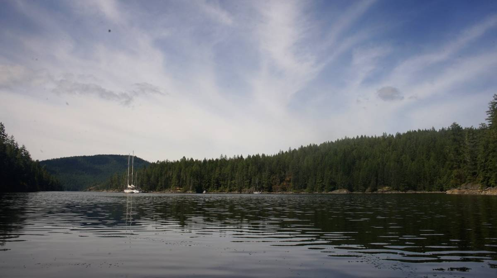
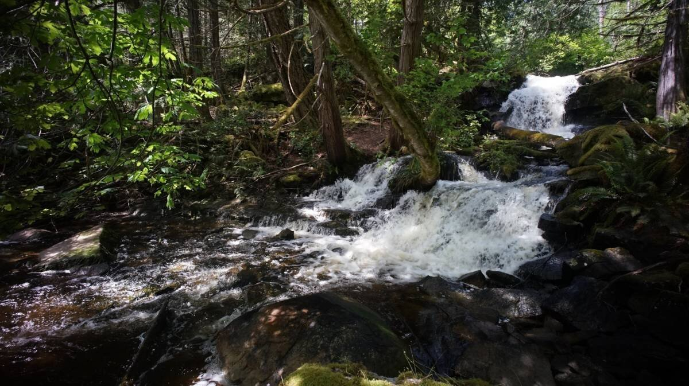
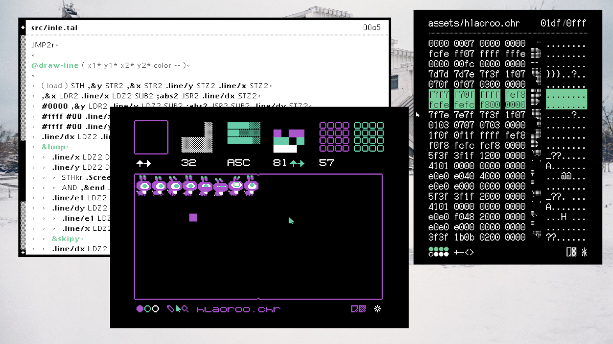
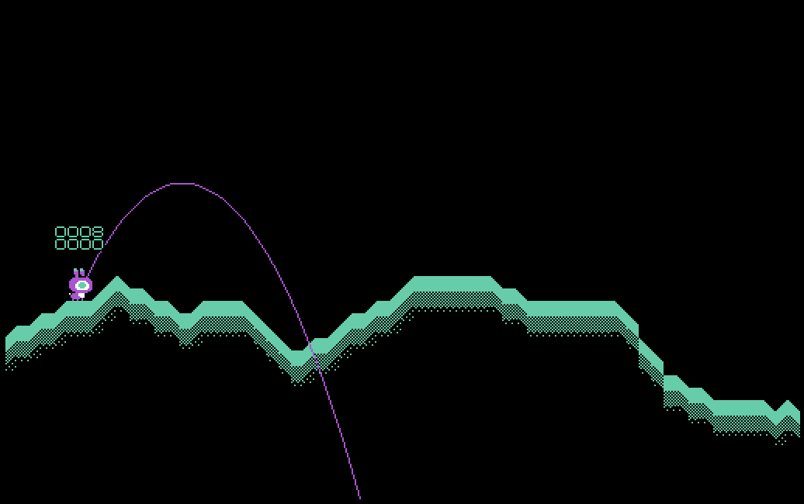
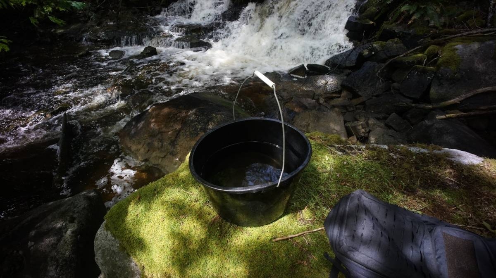
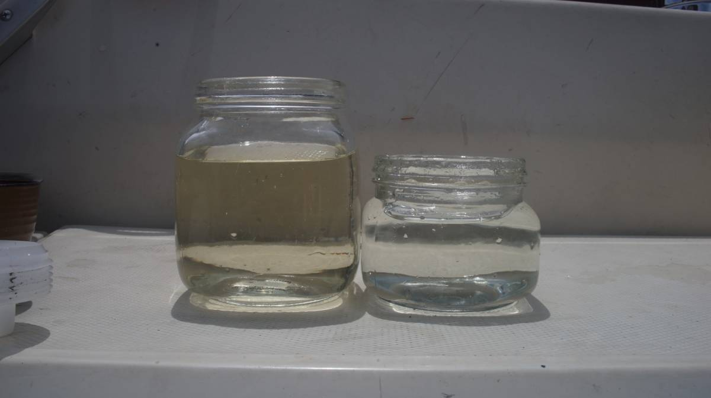
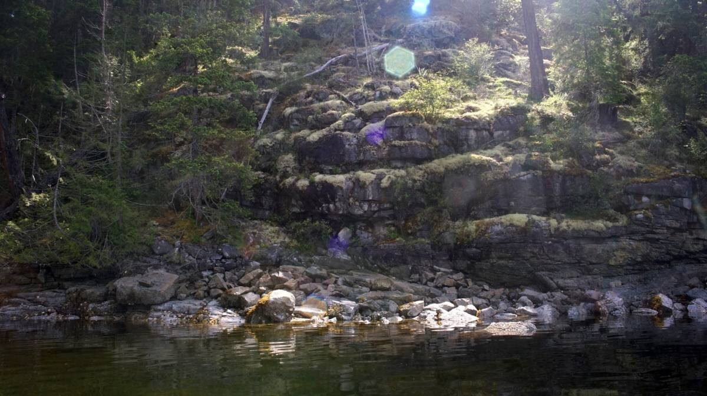
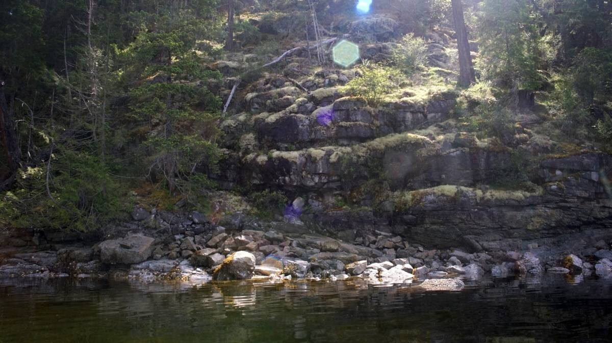

grace harbour
What we refer to on this page as Grace Harbor is on the traditional, stolen, unceded land of the Klahoose, Homalco, Tla’amin First Nations people.
On the 4th of June 2022, we set off for the long 27 nm sail to Grace Harbour from Sturt Bay (north of Texada Island).
The wind was forecast to be 15-25 knots from the southeast. Before leaving, we walked to the breakwater with our binoculars to look at the state of the waves. A strong southeast wind was known to accelelate 5-10 knots higher around Grief Point on the opposing shore to Sturt Bay, on the mainland side. We could not see waves denoting that kind of wind, and so we left. With a single reef in our main, we motored out, but we were able to put the engine to sleep very quickly because the wind was good. We had 15-20 knots of wind, and it carried us well and fast toward Harwood Island.
We didn't experience a wind acceleration, but when we circled past the top of Harwood Island we had to set up the whisker pole, so we could fly the jib dead downwind. Our jib isn't large enough to permit downwind sailing without the whisker pole. We set it up, and then cruised along happily, past Savary Island, past Lund, and all the way to the end of the Copeland Islands. We decided to try and sail through Thulin Passage, we had expected the wind to die but it didn't, and with the current in our favor we whizzed through. Since the pass is quite narrow, it was lovely to be sailing through it, in complete silence. The silence was occasionally broken by some small motor boats, but because of the rain there were few people out there, least of all people like us that were sailing for fun. The wind died after the Copelands, and we had to motor the rest of the way.
We arrived in Grace Harbour at 1830, tired and tired, and very wet. We had planned to try and stern-tie on arrival, thinking that it was the norm in the anchorage, and we did... but after we had set the anchor and tied the stern-line to shore we noticed the reading on the depth meter, it read 20 feet under our keel... the tide was high, and big, and would go down 15-16 feet. With this new bit of information, we thought it wise to move. We hauled up the anchor and went to free-swing elsewhere in the bay. Fuck it, we thought. After stern-tying to the wall we noticed that no one was stern-tied, we had assumed wrong, it was not busy enough at this time of the year so people don't bother.
The next morning our neighbor Dave-yet another Dave, so many Daves out here- came to our boat to chat after hearing that we had cruised offshore around the Pacific. He had done a similar trip in the 90's, and like many bluewater cruisers, he was eager to share his stories and experiences. Our friends on SY Dakota were in the same anchorage, and had told him about our travels, they too were about to leave to go offshore for the first time this year. Whenever we tell people we have sailed offshore, they always expect to find a different sort of boat. When they hear our story, and then see the boat... the responses are always the same: 'you did it... in *that*?' Evidently, Pino doesn't have all the features of a typical bluewater cruiser, at least, it doesn't bear the features of a *comfortable* blue water cruiser. Our trip proves that Yamahas are bluewater capable.
That morning, after Bluewater Dave's visit, Karen and Dakota Dave (giving the Daves names is necessary at this point) suggested we try to walk a trail that leads to a lake. We met up with another couple on another boat, named Bruce and Leslie.
The paths were muddy, partially flooded, from the recently tropical-style downpour we'd had (the rain that too soaked our clothes on the trip up here). We could not reach the lake, the water was too high. For a while we hopped from log to log, and used the sides of the path, but eventually we had neither. Dakota Dave, Karen, Bruce and Devine had good boots, but Leslie and Rek did not. "Piggy back?" Dakota Dave suggested to Rek, "hell no," Rek said, determined to walk there by their own power, or not at all. We went back to try and walk that same path a few days later, the water had receded a little, enough for us to make it past the point we'd reached last time. The trail crosses a small stream, usually the stream is low and easy to cross (we heard) but on that day there was current and it reached near the top of our gum boots. We made it past, and the path opened onto a small peaceful lake. The forest path was quite beautiful, with tree branches covered in lichen, and mosses.
While walking we kept thinking about bears, wondering if there were any in the area, and where they were. We clapped our hands now and then anyway, to alert them of our precense. Wandering into a forest path is very much like diving off the boat into open water, you don't know what is in there, watching you, waiting.
While anchored in Grace Harbour, we started working on a little arcade game, something that we could play together on the boat in the style of Gunbound/Tank Wars... but with rabbits. We're reading Watership Down at the moment, and it has taken over our lives. We speak Lapine, Frith is our god, and all seagulls are Kehaars. For now, the project has the name Inle, to mean 'moon' or 'moonrise' in Lapine. In the book the word also carries a second meaning, the idea of darkness, fear and death.
We stayed in Grace Harbour for 5 days, we were supposed to leave earlier but we waited out a gale and a day of heavy rain before setting off, we weren't eager to get wet again, not yet. We collected a lot of rain that day, two bucket-fulls, and tested our gravity water filter. The day before Devine had gone to get some freshwater from the waterfall onshore, to see how much the filter could filter out.
The water was brown and yellow, full of tannin from decomposing cedar. The water was much lighter after being filtered, and tasted good, although it still had a yellow tinge from the tannin. Our filter cleans water very slowly, but it works very well.
We spent our days rowing Teapot around when it was calm, exploring the various indents on the shoreline. There are a lot of rock walls, steep faces with blocky shapes that seem to have been carved by precise machinery rather than by weather and time. We liked going up close, and listening to water from the recent heavy rain using the various cracks as channels, and coming to drip in the water below.
 

Next stop, we go to Melanie Cove.